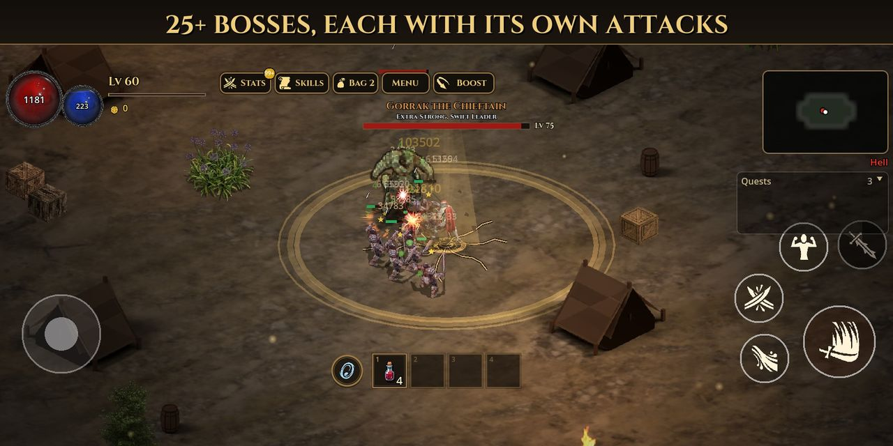
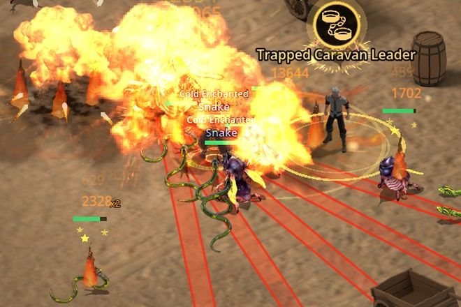
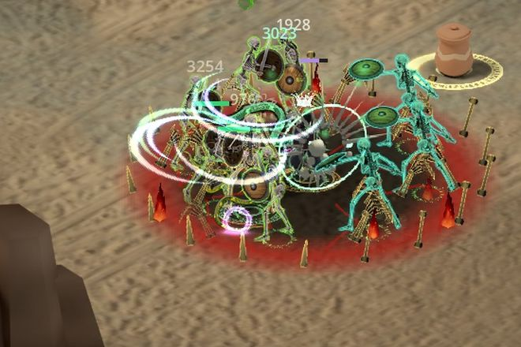
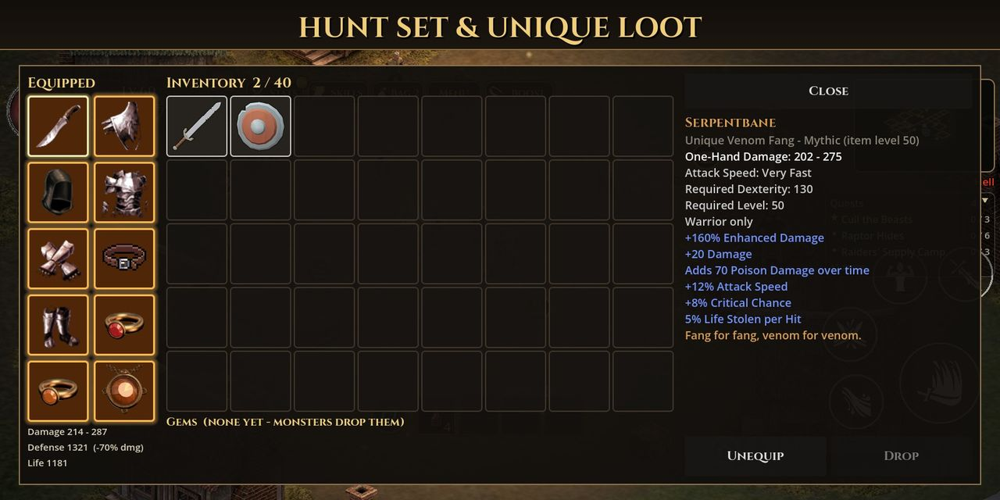
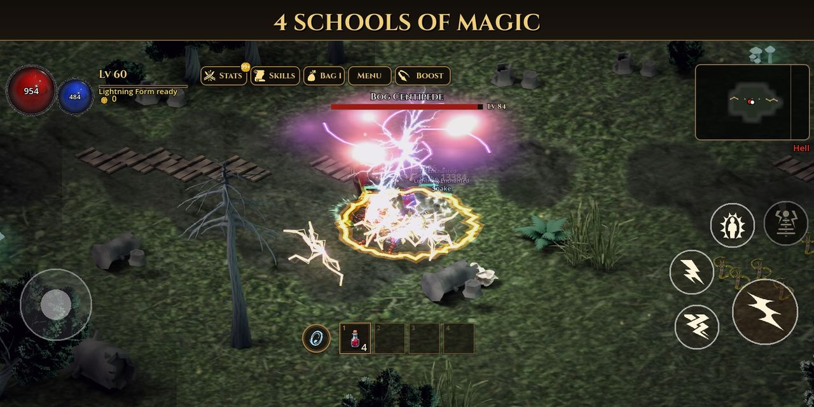

Warrior
A heavy-armor melee fighter who charges in, takes hits and cleaves through crowds.
Game guide · Android
This guide explains what Ashes of Thornfield is, how it plays and what you get for free. It is written for anyone who likes isometric action RPGs and wants one made for phones.
Ashes of Thornfield is a dark fantasy isometric action RPG by Blackthorn Forge. You pick a class, fight through a cursed land, defeat bosses and collect gear that makes your character stronger. It is built for touch screens, with a virtual joystick, an auto-aim attack button and four skill buttons.

The game follows the familiar loop of an action RPG: explore, fight, loot, get stronger, repeat. The story is told across several acts, and after them comes an endgame area called the Ashen Reach.
There are four classes, and all of them are free to play.
A heavy-armor melee fighter who charges in, takes hits and cleaves through crowds.

Four schools of magic: fire, cold, lightning and poison, from meteor storms to blizzards.

A summoner who raises skeletons and commands an army of the dead with bone and soul fire.

A fast martial artist who calls golden dragon spirits to hit whole packs of monsters.
The game has more than 25 bosses, each with its own attacks. Defeating them is the main way to find the best gear.
Items come in five rarities: Normal, Magic, Rare, Set and Unique. Many items have sockets, and you can place gems in them. Matching gems on your gear unlock extra bonuses called resonance. Gems can also be used to engrave an item with a sigil, and rare Ashen gems drop only in the Ashen Reach.

If you have played classic isometric ARPGs like Diablo II, the core idea will feel familiar: a hero, hordes of monsters, bosses and loot with random stats. Ashes of Thornfield has its own world, characters and systems, and it is designed around a phone from the start.
Ashes of Thornfield is available on Android through Google Play. It is not available on iOS.
Yes. The game is free and all four classes are included. It is supported by optional rewarded ads, for example to revive your character. You never have to watch an ad to keep playing.
You can play alone with no internet connection. To play with others, you can join an online room with up to 8 players, or play with friends on the same Wi-Fi network. The PvP Arena lets you fight other players when you want a duel instead of monsters.

Yes. The game is free on Google Play and all four classes are available without paying. It is supported by optional rewarded ads, for example to revive your character. You never have to watch an ad to keep playing.
No. Ashes of Thornfield is currently available on Android only, through Google Play.
Yes. Single-player works offline, with no account or login. Your progress is saved on your phone. Internet is only needed for online co-op rooms.
Yes. You can play co-op with up to 8 people in an online room, or with players on the same Wi-Fi network. There is also a PvP Arena for player-versus-player fights.
Warrior, Mage (fire, cold, lightning and poison schools), Necromancer and Fighter. All four are free.
The Ashen Reach is the endgame area, played after the main acts. It adds harder content, and it is where Ashen gems drop.
No. It is an independent game by Blackthorn Forge. It has its own world, characters and systems, and is not affiliated with Blizzard Entertainment or the Diablo series.
Ashes of Thornfield is an independent game and is not affiliated with Blizzard Entertainment or Diablo.